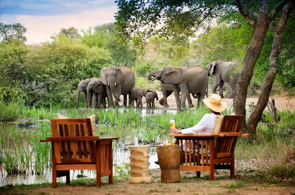
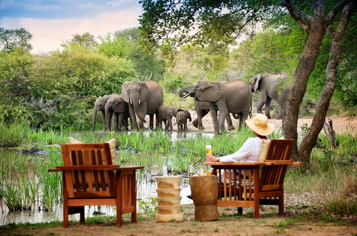

Site Purpose
Temple Inn and suites welcomes each and every person in his/her state of nature
the site is available purposely to cater for the travelling missionaries of the church of Jesus
Christ of later-day saints more especially the temple workers, patrons and their families
all believers of Jesus Christ.
Also provides room for events such as weddings, receptions and youth trips.
Audience
Temple Inn and Suites is available for both single and married people more especially
available for the travelling missionaries, patrons and their families
Also targetting to serve large functions forexample married partners
during weddings, receptions and also youth trips.


About
The temple Inn and suites is a hotel chain headquatered in Bethesda, it builds and manages
spwciallised hotel accomodations near temple location of the church of Church of jesus christ
of Latter-day saints,around the world. The hotel also caters for those who participate in events such as
birthday parties, trips.
It contains specialised services such us a wedding reception hall, long term stay accomodation, free
ameties like temple shuttle, parking, and free wifi.

 

Weather
38
clear
Wind Speed: 4 Km/hr
Wind Chill: N/A